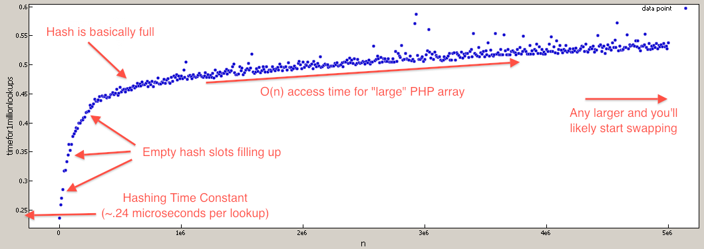

List of Big-O for PHP functions
After using PHP for a while now, I've noticed that not all built-in PHP functions are as fast as expected. Consider these two possible implementations of a function that finds if a number is prime using a cached array of primes.
//very slow for large $prime_array $prime_array = array( 2, 3, 5, 7, 11, 13, .... 104729, ... ); $result_array = array(); foreach( $prime_array => $number ) { $result_array[$number] = in_array( $number, $large_prime_array ); } //speed is much less dependent on size of $prime_array, and runs much faster. $prime_array => array( 2 => NULL, 3 => NULL, 5 => NULL, 7 => NULL, 11 => NULL, 13 => NULL, .... 104729 => NULL, ... ); foreach( $prime_array => $number ) { $result_array[$number] = array_key_exists( $number, $large_prime_array ); }
This is because in_array is implemented with a linear search O(n) which will
linearly slow down as $prime_array grows. Where the array_key_exists
function is implemented with a hash lookup O(1) which will not slow down
unless the hash table gets extremely populated (in which case it's only O(n)).
So far I've had to discover the big-O's via trial and error, and occasionally looking at the source code. Now for the question...
Is there a list of the theoretical (or practical) big O times for all* the built-in PHP functions?
*or at least the interesting ones
For example, I find it very hard to predict the big O of functions listed
because the possible implementation depends on unknown core data structures of
PHP: array_merge, array_merge_recursive, array_reverse,
array_intersect, array_combine, str_replace (with array inputs), etc.
Answer
Since it doesn't seem like anyone has done this before I thought it'd be good
idea to have it for reference somewhere. I've gone though and either via
benchmark or code-skimming to characterize the array_* functions. I've tried
to put the more interesting Big-O near the top. This list is not complete.
Note: All the Big-O where calculated assuming a hash lookup is O(1) even
though it's really O(n). The coefficient of the n is so low, the ram overhead
of storing a large enough array would hurt you before the characteristics of
lookup Big-O would start taking effect. For example the difference between a
call to array_key_exists at N=1 and N=1,000,000 is ~50% time increase.
Interesting Points :
-
isset/array_key_existsis much faster thanin_arrayandarray_search -
+(union) is a bit faster thanarray_merge(and looks nicer). But it does work differently so keep that in mind. -
shuffleis on the same Big-O tier asarray_rand -
array_pop/array_pushis faster thanarray_shift/array_unshiftdue to re-index penalty
Lookups :
array_key_exists O(n) but really close to O(1) - this is because of linear
polling in collisions, but because the chance of collisions is very small, the
coefficient is also very small. I find you treat hash lookups as O(1) to give
a more realistic big-O. For example the different between N=1000 and N=100000
is only about 50% slow down.
isset( $array[$index] ) O(n) but really close to O(1) - it uses the same
lookup as array_key_exists. Since it's language construct, will cache the
lookup if the key is hardcoded, resulting in speed up in cases where the same
key is used repeatedly.
in_array O(n) - this is because it does a linear search though the array
until it finds the value.
array_search O(n) - it uses the same core function as in_array but returns
value.
Queue functions :
array_push O(∑ var_i, for all i)
array_pop O(1)
array_shift O(n) - it has to reindex all the keys
array_unshift O(n + ∑ var_i, for all i) - it has to reindex all the keys
Array Intersection, Union, Subtraction :
array_intersect_key if intersection 100% do
O(Max(param_i_size)*∑param_i_count, for all i), if intersection 0% intersect
O(∑param_i_size, for all i)
array_intersect if intersection 100% do O(n^2*∑param_i_count, for all i), if
intersection 0% intersect O(n^2)
array_intersect_assoc if intersection 100% do
O(Max(param_i_size)*∑param_i_count, for all i), if intersection 0% intersect
O(∑param_i_size, for all i)
array_diff O(π param_i_size, for all i) - That's product of all the
param_sizes
array_diff_key O(∑ param_i_size, for i != 1) - this is because we don't need
to iterate over the first array.
array_merge O( ∑ array_i, i != 1 ) - doesn't need to iterate over the first
array
+ (union) O(n), where n is size of the 2nd array (ie array_first +
array_second) - less overhead than array_merge since it doesn't have to
renumber
array_replace O( ∑ array_i, for all i )
Random :
shuffle O(n)
array_rand O(n) - Requires a linear poll.
Obvious Big-O :
array_fill O(n)
array_fill_keys O(n)
range O(n)
array_splice O(offset + length)
array_slice O(offset + length) or O(n) if length = NULL
array_keys O(n)
array_values O(n)
array_reverse O(n)
array_pad O(pad_size)
array_flip O(n)
array_sum O(n)
array_product O(n)
array_reduce O(n)
array_filter O(n)
array_map O(n)
array_chunk O(n)
array_combine O(n)
I'd like to thank Eureqa for making it easy to find the Big-O of the functions. It's an amazing free program that can find the best fitting function for arbitrary data.
EDIT:
For those who doubt that PHP array lookups are O(N), I've written a
benchmark to test that (they are still effectively O(1) for most realistic
values).

$tests = 1000000; $max = 5000001; for( $i = 1; $i <= $max; $i += 10000 ) { //create lookup array $array = array_fill( 0, $i, NULL ); //build test indexes $test_indexes = array(); for( $j = 0; $j < $tests; $j++ ) { $test_indexes[] = rand( 0, $i-1 ); } //benchmark array lookups $start = microtime( TRUE ); foreach( $test_indexes as $test_index ) { $value = $array[ $test_index ]; unset( $value ); } $stop = microtime( TRUE ); unset( $array, $test_indexes, $test_index ); printf( "%d,%1.15f\n", $i, $stop - $start ); //time per 1mil lookups unset( $stop, $start ); }
Suggest
The explanation for the case you specifically describe is that associative
arrays are implemented as hash tables - so lookup by key (and correspondingly,
array_key_exists) is O(1). However, arrays aren't indexed by value, so the
only way in the general case to discover whether a value exists in the array
is a linear search. There's no surprise there.
I don't think there's specific comprehensive documentation of the algorithmic complexity of PHP methods. However, if it's a big enough concern to warrant the effort, you can always look through the source code.